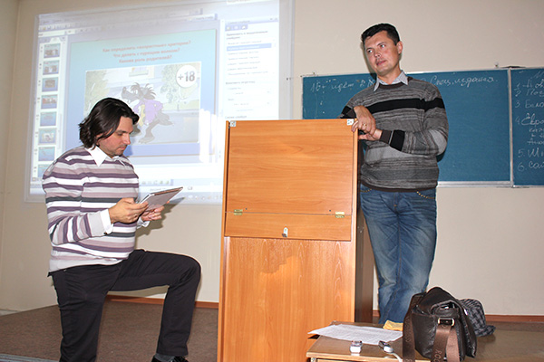

Неоднозначный, а как по мне так откровенно глупый закон о защите детей от взрослых, был принят ещё в 2010, а с сентября этого года начал тестироваться на живых людях.
Живые люди, в лице, как простых людей, так и целых редакторов СМИ, закон читали не всегда, но реагировать, стали. Внешнее проявление закона, в виде маркировки Число+, стало появляться то тут, то там. Кто-то маркировал каждый материал в своей газете, кто-то проявлял уникальное чувство юмора, написав в своём профиле в соц. сети «18+», а кто-то, вроде меня, думал, что закон его не касается. Забегая вперёд, думал зря. Закон касается всех, пострадают, как обычно, самые назащищённые и всё такое.
28 сентября Кузбасским Медиаклубом в лице неутомимой Гульсары Михайлиной, при поддержке РГТЭУ, в лице Сергея Чернышёва, был организован очередной просветительский семинар по применению Закона о защите детей.
Самым ценным, кроме организаторов и ведущего, на той встрече было участие в ней Валерия Жаронкина, начальника отдела надзора в сфере массовых коммуникаций Роскомнадзора по Кемеровской области. За что ему спасибо.

Времени уже прошёл целый месяц, поэтому постараюсь без эмоций, просто тезисами. Будет, кстати, неплохо, если закон ты всё-таки почитаешь.
Итак, закон касается всех. В соответствии с законом промаркирована должна быть любая информационная продукция. Таким образом Валерием Жаронкиным было развенчано моё заблуждение. Не читая закон, я думал, что обязанность возлагается лишь на зарегистрированные СМИ. Это не так. По закону информационная продукция - предназначенные для оборота на территории Российской Федерации продукция средств массовой информации, печатная продукция, аудиовизуальная продукция на любых видах носителей, программы для электронных вычислительных машин (программы для ЭВМ) и базы данных, а также информация, распространяемая посредством зрелищных мероприятий, посредством информационно-телекоммуникационных сетей, в том числе сети "Интернет", и сетей подвижной радиотелефонной связи.
К слову, маркировка должна присутствовать именно на каждой странице сайта, ведь посетители приходят к вам, в том числе, и из поисковиков, а значит вы должны дать понять каждому, что вы соблюдаете закон и всё такое.
В законе всего существует 5 градаций информационной продукции, их расплывчатые характеристики в законе тоже пристутствуют, не вижу смысла дублировать их здесь. Первое решение, которое может прийти в неокрепший в судах ум — написать везде, где можно 18+ и бить себя пяткой в грудь, что закон ты соблюдаешь, а тот человек, который перебежал проспект Ленина в неположенном месте вообще не ты. Но у этого решения есть существенные недостатки.
Маркированную таким образом телевизионную или радиопрограмму закон запрещает выдавать в эфир с 4 до 23 или с 7 до 21 часа, в зависимости от категории (статья 13). Печатную продукцию, обозначенную знаком «18+» мы не можем выставлять на продажу в местах, где появляются дети. То есть первую и последнюю полосы газеты вообще нельзя показывать, а если на обложке ничего ужасного для законодателей нет, то само издание стоит запаивать в полиэтиленовый пакет (статья 16).
Все эти требования, абсурдны (какой прок в предупреждении раз в час на радио об органичении), нелепы и, более того, опасны для общества.
Опасность в следующем (дело касается, конечно, всеми любимого интернета, кому сдались эти газеты, а порнорадиостанций так вообще в Кемерове, кажется, нет):
Доступ к информации, распространяемой посредством информационно-телекоммуникационных сетей, в том числе сети "Интернет", в местах, доступных для детей, предоставляется лицом, организующим доступ к сети "Интернет" в таких местах (за исключением операторов связи, оказывающих эти услуги связи на основании договоров об оказании услуг связи, заключенных в письменной форме), другим лицам при условии применения административных и организационных мер, технических, программно-аппаратных средств защиты детей от информации, причиняющей вред их здоровью и (или) развитию. (статья 14)
Перевожу на русский язык. Если у вас есть кафе, а в кафе есть хотспот, а через этот хотспот, жаждущий горячих азиаток эксперт, этих азиаток находит, то у вас (лица, организовавшего эксперту доступ) потенциальны совершенно разного уровня проблемы. Какой остаётся выход владельцам хотспотов, я думаю вы понимаете сами.
Но проблема не только в хотспотах. В тех же учебных заведениях, с огромной долей вероятности, оранизующим выход в интернет лицом является директор учебного заведения. Никаких гарантированно работающих механизмов у директора учебного заведения по предотвращению доступа к порнографии сегодня нет. Какой выход остаётся законопослушному директору, подскажет читатель.